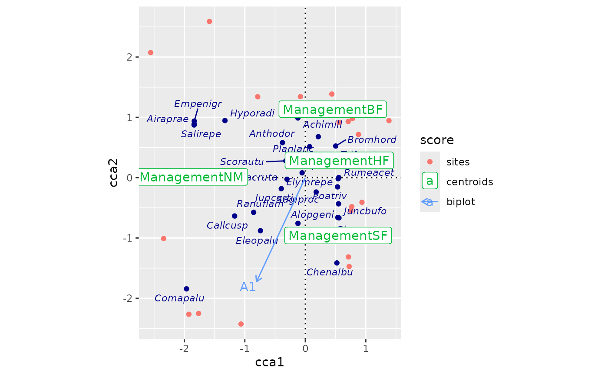
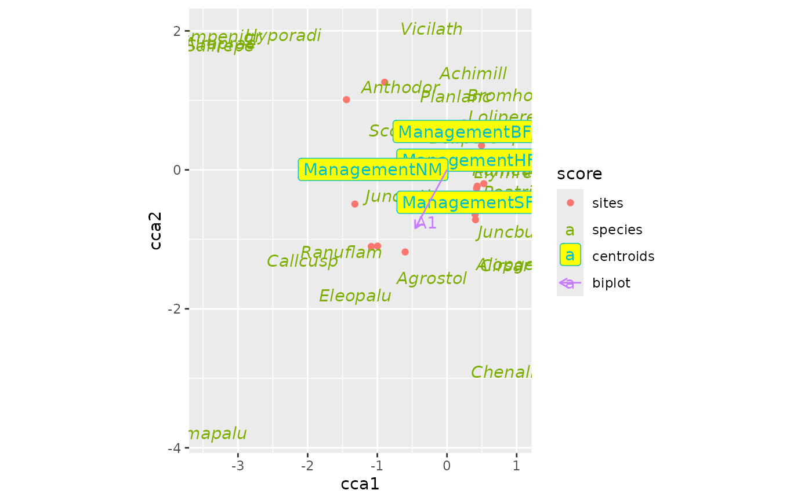
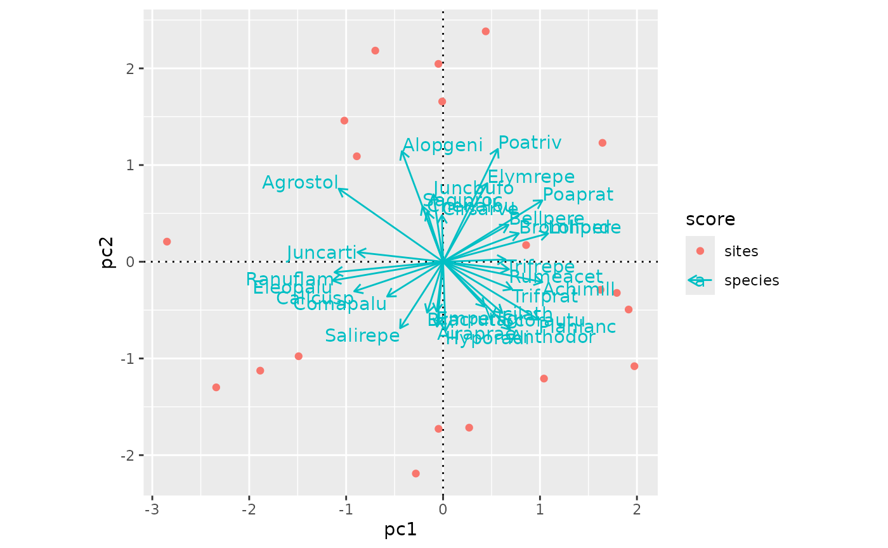

Function ordiggplot sets up an ordination graph but draws no
result. You can add new graphical elements to this plot with
geom_ordi_* functions of this package, or you can use standard
ggplot2 geom_* functions and use ggscores as their
data argument.
Usage
ordiggplot(model, axes = c(1, 2), legend.position = "right", ...)
ggscores(score)Arguments
- model
An ordination result object with a compatible
fortify()meethods (typically from vegan).- axes
Two axes to be plotted
- legend.position
Legend position: see
ggplot2::theme()for details. Use"none"to not draw the legend. Someggplot2::theme()can ignore this argument.- ...
Parameters passed to
fortifyfunctions to extract ordination scores. You can definescoresarguments such asscaling.- score
Ordination score to be added to the plot.
Value
Returns a ggplot object with slot data for full
ordination data and slot mapping with ordination axes mapped to
x and y, label to text labels for each row and factor
score type mapped to colour.
Details
The ggvegan package has two contrasting approaches to draw
ordination plots. The autoplot functions (e.g. autoplot.rda(),
autoplot.cca(), and autoplot.metaMDS()) draw a complete plot
with one command, but the design is hard-coded in the
function, and it may be difficult to add new layers to the graph.
In contrast, function ordiggplot() only sets up an ordination
plot, but allows you to add layers to the graph one by one with
full flexibility of the ggplot2 functions. It initializes
the ggplot2 graph with idiom ggplot(data, mapping) which
allows other functions to use the ordination data and axis
mapping in adding new layers. The included mapping specifies
coordinates x and y and variables label for text labels and a
score-type specific colour. Any ggplot2 function that can
use this mapping will work automatically. Support function
ggscores selects a slice of ordination scores that can be used as
a data argument in the geom function. To plot the site scores
of ordination result mod as points, you can use idiom
ordiggplot(mod) + geom_point(data = ggscores("sites")).
There are specific functions to ease adding layers to an ordination
graph. See the documentation of geom_ordi_arrow(),
geom_ordi_label(), geom_ordi_point(), geom_ordi_repel(),
geom_ordi_text(). These correspond to similarly named geom_*
functions. For instance, geom_ordi_point adds very little to
geom_point, and you can use all arguments of the standard geom
function. These functions are of type geom_ordi_*(score, ...)
which is similar to geom_*(data = ggscores(score), ...). Some
functions were adapted to typical ordination data and return
compound geometries. For instance, geom_ordi_arrow() returns
layers geom_segment for the arrows, and geom_text for their
name labels. In addition, there are functions to add previously
fitted results of vegan::envfit() and vegan::ordisurf() (see
autolayer.envfit(), autolayer.ordisurf()).
The ordiggplot() function extracts results using fortify()
functions of this package, and it accepts the arguments of those
functions. This allows setting, e.g., the scaling of ordination
axes. The ordiggplot skeleton sets up data used in plotting,
and you should define axis scaling, axes etc in the ordiggplot
call and they will be used in all added layers.
Examples
library("vegan")
library("ggplot2")
data(dune, dune.env, varespec, varechem)
m <- cca(dune ~ Management + A1, dune.env)
## data and mapping of the ordiggplot object
ordiggplot(m)@data
#> # A tibble: 75 × 5
#> score label cca1 cca2 weight
#> <fct> <chr> <dbl> <dbl> <dbl>
#> 1 species Achimill 0.215 0.679 0.0234
#> 2 species Agrostol -0.121 -0.757 0.0701
#> 3 species Airaprae -1.84 0.888 0.00730
#> 4 species Alopgeni 0.538 -0.660 0.0526
#> 5 species Anthodor -0.377 0.581 0.0307
#> 6 species Bellpere 0.141 0.228 0.0190
#> 7 species Bromhord 0.502 0.525 0.0219
#> 8 species Chenalbu 0.522 -1.41 0.00146
#> 9 species Cirsarve 0.556 -0.667 0.00292
#> 10 species Comapalu -1.96 -1.84 0.00584
#> # ℹ 65 more rows
ordiggplot(m)@mapping
#> Aesthetic mapping:
#> * `x` -> `.data[["cca1"]]`
#> * `y` -> `.data[["cca2"]]`
#> * `label` -> `.data[["label"]]`
#> * `colour` -> `.data[["score"]]`
## use geom_ordi_* functions
ordiggplot(m) + geom_ordi_axis() +
geom_ordi_point("sites") +
geom_ordi_repel("species", col = "darkblue",
text.params = list(mapping = aes(fontface = "italic"))) +
geom_ordi_label("centroids") +
geom_ordi_arrow("biplot")

## use ggscores + standard geom_* functions
ordiggplot(m, scaling = "sites") +
geom_point(data = ggscores("sites")) +
geom_text(data = ggscores("species"),
mapping = aes(fontface = "italic")) +
geom_label(data = ggscores("centroids"), fill = "yellow") +
geom_ordi_arrow("biplot")

## Messy arrow biplot for PCA
m <- rda(dune)
ordiggplot(m, corr = TRUE) +
geom_ordi_axis() +
geom_ordi_point("sites") +
geom_ordi_arrow("species")
